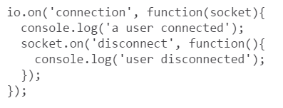
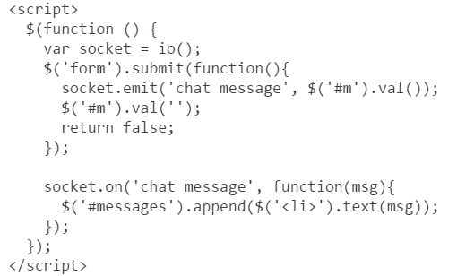

My Journey of confusion with Socket started by doing the tutorial that is hosted by Socket on their website. The goal of the tutorial was to make a chat system that when you submitted info into a text box it would appear live in the above chat window. Once that was going I ahd to take the knowledge I learnt from that and try and implement it into our class project. The end goal was to get newly added customers and their wanted meals to be displayed on a seperate page (ViewCustomers) when the user put the details in, without the need of a refresh. Socket can be used to communicate between pages and servers to do some very cool things with live updates and passing data.
Below I have added some examples of the code obtained through the Socket tutorial and have written about what it does.
The above code is a function using socket, calling socket using "io." as it was previously assigned to. This method will output to the terminal when someone connects. At this point just getting everything going and making sure it's working.
Now for soemthing cooler, getting socket to return a input text value within an appending list (sothe messages go down the page, similar to facebook messenger). Here we can see a script to run when the submit button is pressed, to get the chatmessage and then output it, or "emit" it, which is a socket method to output data.